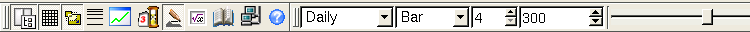

Toolbar

Description
The most used Qtstalker functions are found here in the toolbar.
From left to right they are:
- Quit Qtstalker - shuts down the app.
- Preferences - displays the app preferences dialog
- Tab functions toggle - Shows/hides the tab area.
- Grid toggle - Shows/hides the chart grids.
- Scale to screen - Toggles the scaling of charts to visible data
or entire data series.
- Crosshairs - Toggles the chart crosshairs.
- Paper Trade Mode - Toggles the paper trade mode.
- Draw Mode - Toggle draw mode for chart object functions.
- New Indicator - Displays the new indicator dialog.
- Data window - Displays the data window.
- Quotes - Displays the quote dialog.
- Help - Displays the help system dialog.
- Compression - Toggles the chart compression. eg.daily or weekly
bars
- Bar spacing - Changes the pixel space between each bar.
- Bar spacing quick change buttons - Quickly change the pixel spaces between each bar with these presets.
- Bars - Loads the total number of bars at one time.
- Paper Trade Date - Sets the date to start paper trading. Only
visible when paper trade mode is on.
- Load Next Bar - Advances the chart one bar. Only visible when
paper trade mode is on.
- Bar slider allows you to shift the chart left or right depending
on how many bars are loaded. It behaves like a scrollbar but less
invasive.